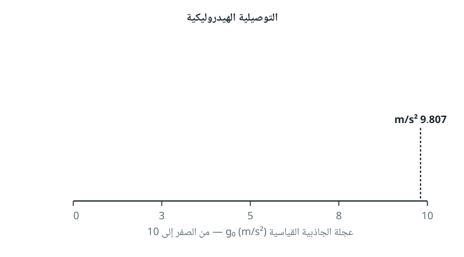

التوصيلية الهيدروليكية
Hydraulic conductivity
التوصيلية الهيدروليكية هي قدرة وسط مسامي على تمرير الماء، وتُعرَّف بقانون دارسي كنسبة التدفق الحجمي إلى تدرّج الضغط الهيدروليكي، وتُقاس بالمتر في الثانية وتختلف باختلاف المادة والسائل.
التوصيلية الهيدروليكية K هي معامل التناسب في قانون دارسي: q = −K·(dh/dl)، حيث q التدفق الحجمي لكل وحدة مساحة (السرعة الدارسية) وdh/dl تدرّج الضغط الهيدروليكي. وحدتها متر في الثانية. وهي تعتمد على الوسط المسامي وعلى السائل معاً: K = k·ρ·g/μ، حيث k النفاذية الجوهرية بوحدة m² وρ كثافة السائل وμ لزوجته. مثال: رمل ناعم له K نحو 10⁻⁴ m/s، وطين له K نحو 10⁻⁹ m/s، أي أن الرمل يمرر الماء أسرع بخمس مراتب عشرية. ولهذا يُستعمل الطين في بطانة مكبات النفايات لمنع التسرب.
كيف تعمل الظاهرة؟
الماء في وسط مسامي يتدفق عبر شبكة من القنوات المتصلة بين الحبيبات. والمقاومة للتدفق تأتي من الاحتكاك اللزج بجدران هذه القنوات، وهو ما يفسّر تناسب التدفق عكسياً مع اللزوجة. وكلما كانت القنوات أوسع وأكثر استقامة، قلّت المقاومة وزادت التوصيلية. ولهذا فإن الرمل الخشن عالي التوصيلية والطين منخفضها رغم أن كليهما مسامي: مسامات الطين صغيرة جداً، والاحتكاك اللزج فيها يغلب. وقانون دارسي صالح للجريان الصفحي البطيء، وهو ما يتحقق في المياه الجوفية الطبيعية، حيث سرعات التدفق صغيرة جداً (أمتار في اليوم).
العلاقة بالأرقام
q = −K·(dh/dl)، وK = k·ρ·g/μ. والتدفق الكلي Q = q·A. والسرعة الحقيقية v = q/n_e حيث n_e المسامية الفعالة. مثال عددي: K = 1.0×10⁻⁴ m/s، dh/dl = 0.25 → q = 2.5×10⁻⁵ m/s. وبـA = 100 m²: Q = 2.5×10⁻³ m³/s = 216 m³/day. وبـn_e = 0.30: v = 8.33×10⁻⁵ m/s = 7.2 m/day. والتحقق من K: بنفاذية k = 1.0×10⁻¹¹ m² وμ = 8.90×10⁻⁴ Pa·s: K = 1.0×10⁻¹¹ × 997.00 × 9.806 65/8.90×10⁻⁴ = 9.78×10⁻⁸/8.90×10⁻⁴ = 1.10×10⁻⁴ m/s — مطابق تقريباً.
مفاهيم متقاربة
يُفرَّق بين التوصيلية الهيدروليكية والنفاذية الجوهرية: K تعتمد على السائل، وk على الوسط وحده. ويُفرَّق بين التوصيلية والمسامية: المسامية كمية تخزين، والتوصيلية كمية نقل، وقد تكون الأولى عالية والثانية منخفضة كما في الطين. ويُفرَّق بين التوصيلية الهيدروليكية والتوصيلية الكهربائية: الثانية قدرة على تمرير التيار الكهربائي، وتُستعمل في المسح الجيوفيزيائي للتربة، ولا علاقة مباشرة بينهما. وأخيراً يُفرَّق بين التوصيلية المشبعة وغير المشبعة: في الوسط غير المشبع تنقص K بشدة مع نقص محتوى الماء، وتصير دالة في الشدّ الرطبي.
حدود التطبيق
قانون دارسي صالح للجريان الصفحي، وينهار عند السرعات العالية حيث يصير الجريان مضطرباً كما في الحصى الخشن أو قرب الآبار الضخمة، فتُستعمل معادلات غير خطية. ولا يصح في الأوساط المشققة أو الكارستية حيث يتدفق الماء في قنوات كبيرة لا في مسام، فتصير التوصيلية غير متجانسة بشدة. ولا يصح في التربة المتجمدة أو في المواد الانتفاخية حيث تتغير البنية بالماء. وأخيراً K قيمة متوسطة على حجم كبير، وقد تختلف بمراتب عشرية داخل الطبقة نفسها، فتُستعمل أساليب إحصائية لا قيمة واحدة.

| الكمية | القيمة | المصدر |
|---|---|---|
| عجلة الجاذبية القياسية g₀ | 9.806 65 m/s² | [1] |
| كثافة الماء السائل عند 25 °م | 997.00 kg/m³ | [2] |
| السرعة الدارسية في رمل K=10⁻⁴ m/s بتدرّج 0.25 | 2.5×10⁻⁵ m/s | [1] |
المصادر
- 1 CODATA Value: standard acceleration of gravity — NIST — CODATA 2022 recommended values (2024). physics.nist.gov/cgi-bin/cuu/Value?gn · اطُّلع عليه 2026-11-21
- 2 NISTIR 5078 — Thermodynamic Properties of Water, 0 to 374 C and Pressures to 100 MPa (IAPWS-95 tabulation) — NIST — National Institute of Standards and Technology (1998). www.nist.gov/publications/thermodynamic-properties-water-temperatures-0-374-c-and-pressures-100-mpa · اطُّلع عليه 2026-11-21
- 3 The International System of Units (SI), 9th edition (2019) — BIPM — Bureau International des Poids et Mesures (2019). www.bipm.org/en/publications/si-brochure · اطُّلع عليه 2026-11-21
استشهد بهذا المصطلح
الصيغتان مبنيتان من بيانات الصفحة نفسها: العنوان والتاريخ ورابط النسخة المنشورة.
التوصيلية الهيدروليكية — Hydraulic conductivity. (2026). ديوان المعرفة — انفراد. https://infiradev.com/diwan/terms/term-hydraulic-conductivity.html
@misc{term-hydraulic-conductivity2026,
title = {التوصيلية الهيدروليكية},
titleaddon = {Hydraulic conductivity},
howpublished = {{ديوان المعرفة — انفراد} — مرجع علمي عربي},
year = {2026},
url = {https://infiradev.com/diwan/terms/term-hydraulic-conductivity.html},
urldate = {2026-11-26},
note = {مراجعة علمية: hermes (مراجعة معتمدة 2026-11-26)}
}
راجعه: hermes (مراجعة معتمدة 2026-11-26) · 2026-11-26 · آخر تحديث 2026-11-21